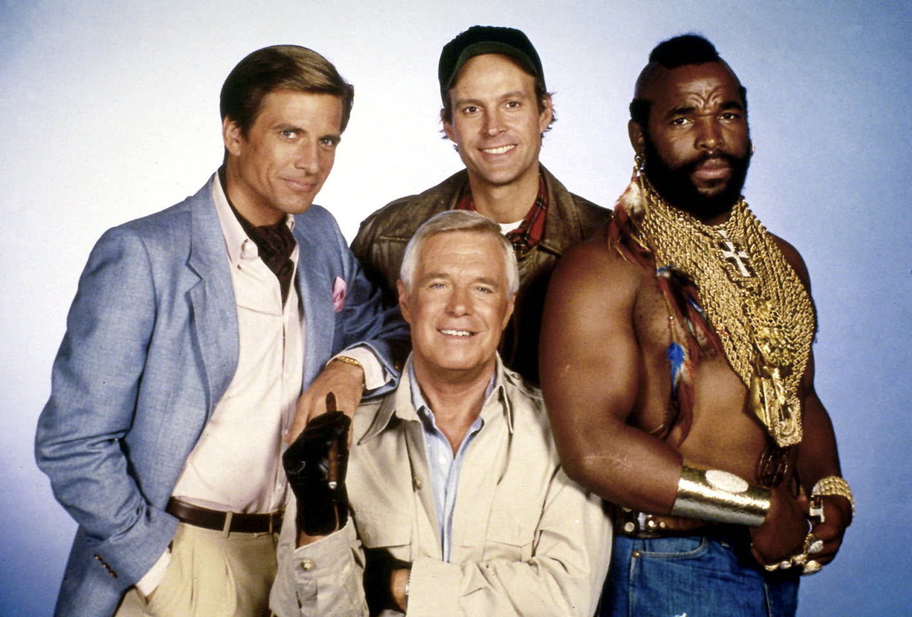
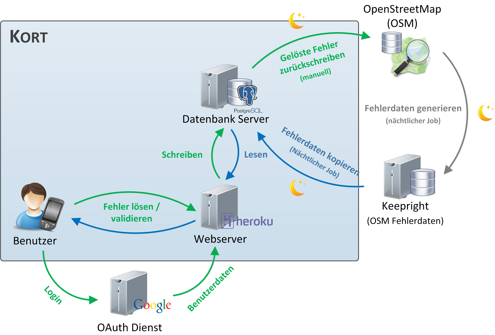
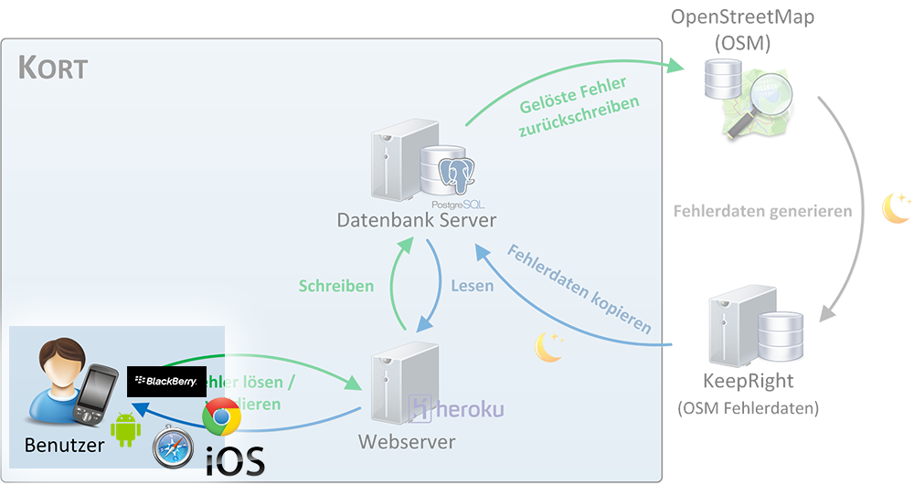

Kort
Gamified Mobile App zur Verbesserung von OpenStreetMap
- Arbeit:
- Bachelorarbeit Herbstsemester 2012/13
- HSR Hochschule für Technik Rapperswil
- Entwickler:
- Jürg Hunziker (@tschortsch85)
- Stefan Oderbolz (@odi)
13. November 2013
Le Team

Le Team
Stefan Oderbolz
OpenStreetMap
- Frei nutzbare Geodaten
- Über 1 Million registrierte Benutzer
-
Fehlende/falsche Daten
- Strasse ohne Namen
- Fehlendes Tempolimit
Kort
- WebApp basierend auf HTML5 und CSS3
- Frontend: JavaScript
- Backend: PHP
-
OpenStreetMap-Fehler
- Auf Karte darstellen
- Beheben
- Lösungen überprüfen
-
Spielelemente
- Punkte (Koins)

- Auszeichnungen

- Highscore
- Punkte (Koins)
Demo
Big Picture

Cross-platform WebApp

Sencha Touch
- Sencha Touch 2 Framework
- JavaScript Framework für mobile Web-Applikationen
- Optimiert für Touchscreens
- Verwendet Web Standards (HTML5, CSS3)
- Unterstützung für WebKit-Browser (ST 2.1)
- Mobile: iOS, Android, BlackBerry
- Desktop: Chrome, Opera, Safari
Fakten, Fakten, Fakten
- "Inoffizielles" Ziel: 50 Benutzer
- Benutzer
- OpenStreetMap:
- Google:
- Facebook:
- ⇒ Total: !
- Lösungsvorschläge:
- Überprüfungen: